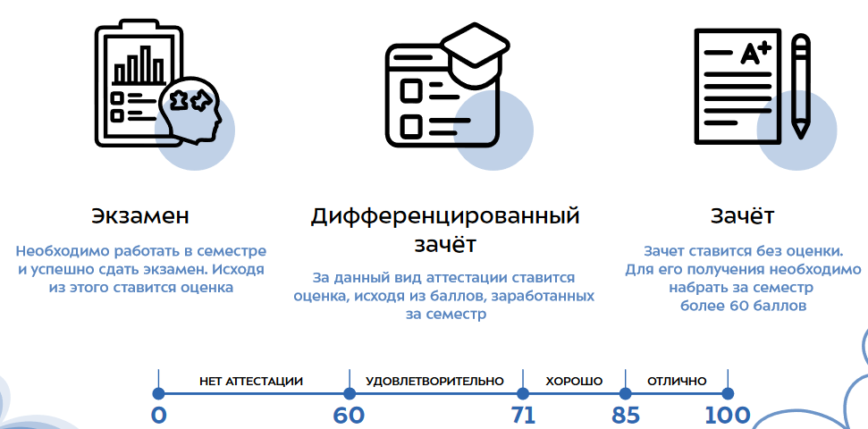

Привет!👋
Встреча координаторов и группы ИУ6-12Б
Почти готово
Интерактив!
 crowd.live/NJG5M
crowd.live/NJG5M
План встречи
I. Презентация
II. Вопросы и ответы
III. Настолки
Поехали!
Часть 0. Координаторы, кураторы, старосты, профорги и все-все-все
Координаторы
Залыгин Вячеслав, ИУ6-33Б
Пешков Дмитрий, ИУ6-13М
Кто это?
> Студенты-старшекурсники, которые помогают группе адаптироваться к учебе в Бауманке.
Что делают?
> Оперативно отвечают на вопросы, скидывают важную информацию. Координаторы владеют всей необходимой информацией о Бауманке, которая может понадобиться в первое время.
Куратор
Кто это?
> Человек из преподавательского состава кафедры.
Что делает?
> Проводит со старостой смотры успеваемости. Решает организационные вопросы в случае возникновения проблем с учебным процессом.
Староста
Кто это?
> Человек из группы. Будет назначен замдеком первого курса.
Что делает?
> Является связующим звеном между преподавателями, деканатом и группой. Следит за посещаемостью группы на парах, передаёт информацию от декана и преподателей группе, организует взаимодействие.
Профорг
Кто это?
> Человек из группы. Группа сама выбирает своего профорга.
Что делает?
> Является филиалом профкома в группе. 😁 Собирает взносы, информирует людей о мероприятиях и выплатах профкома, организует взаимодействие группы с профкомом.
Немного интерактива
Часть 1. Личный кабинет и расписание
Единая учетная запись
Позволяет получить доступ к электронным сервисам университета.
- Личный кабинет https://lks.bmstu.ru
- Почта https://student.bmstu.ru/
- Система обучения https://e-learning.bmstu.ru/
- Библиотека https://library.bmstu.ru/
- Wi-Fi в университете
- И многое другое
Мобильное приложение Мой МГТУ
Дублирует личный кабинет. Позволяет смотреть успеваемость, расписание, результаты сессии и т.д.

Раписание. Кто такие числитель и знаменатель?
Учеба начинается 1-го сентября, с числителя.
В семестре 17 недель. В зависимости от четности недели расписание может немного меняться. Числителями называют нечетные недели, знаменателем -- четные.

Лекция, семинар и лаба
Существует 3 типа занятий.
> Лекция: весь поток в ~150 человек собирается в большой аудитории, где преподаватель рассказывает теорию.
> Семинар: одна группа с преподвателем занимается заданиями по предмету.
> Лаба: по методичке или заданию делаем практическое задание, потом защищаем у преподавателя.
А где пара?
Немного о навигации
Как понять расположение аудитории? Первая цифра в номере -- этаж, буква-постфикс -- расположение аудитории.
Л -- учебно-лабораторный корпус
М -- корпус СМ
Э -- корпус Энерго
Ю -- южная часть ГЗ
Без постфикса -- центральная или северная часть ГЗ
А где физра?
https://fv.bmstu.ru/

Продолжаем интерактив!
Часть 2. Предметы первого семестра
Зачетные и экзаменнационные
За каждый предмет в течение семестра можно получить до 100 баллов. Баллы набираются за рубежные контроли, контрольные работы, стендовые домашки, а также за экзамен, если предмет экзаменационный.
